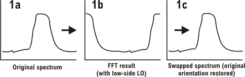
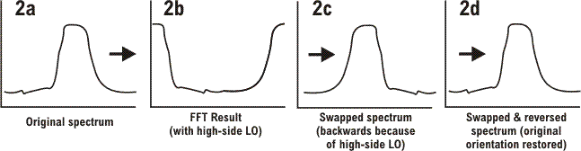

DSP_RF_SWAP()
In most applications, users will not need to call the DSP_RF_SWAP() function, because spectrum swapping (if it is needed) is performed automatically by other DSP functions, such as DSP_RF_MOD_POWER(). The DSP_RF_SWAP() function is provided for the benefit of users who wish to create their own custom DSP functions within a TestMethod, and therefore need direct access to spectrum swapping function.
This function is used to correct two unwanted consequences of the FFT process. The first of these is that the FFT spectrum places the center frequency of the original spectrum at 0 Hz, so that the original signal (see graph 1a in the illustration bel0w) is split and placed at the right and left sides of the spectrum (graph 1b). In this case, the measurement uses a low-side LO (that is, the LO frequency is below the measured frequency). The DSP_RF_SWAP function restores the center frequency to the middle of the spectrum (graph 1c).

The second unwanted consequence of the FFT process occurs when the measurement uses a high-side LO, as in the illustration below. As shown in graph 2b, the FFT result is not only split but backwards; the two halves of the split are mirror images of their counterparts in the original spectrum. Consequently, the swapped spectrum in graph 2c is also a mirror image of the original spectrum. To correct for this, it is necessary to reverse the swapped spectrum (graph 2d) to fully restore the orientation of the original spectrum.

Note that reversal of the spectrum is necessary if a high-side LO was used, but not if a low-side LO was used.
This API is defined in the header file /opt/hp93000/soc/prod_com/include/MAPI/libdsp.h.
Syntax
DSP_RF_SWAP(ARRAY_COMPLEX & sourceData, const INT highSideLO); DSP_RF_SWAP(ARRAY_D & sourceData, const INT highSideLO);
I/O |
Parameter |
Notes |
|---|---|---|
I |
sourceData |
An array representing a spectrum produced by the FFT process; this function corrects the data in the array so that the center frequency is placed in the middle of the spectrum. The array can be of complex numbers or doubles. |
I |
highSideLO |
If selected, reverse the swapped spectrum left-to-right to correct for the measurement's use of an LO frequency that is above the measured frequency. 1 = correct for use of high-side LO 0 = do not correct for use of high-side LO |
Example
DSP_RF_SWAP(cData, 0);
In this example, it would be necessary for the variables that are used as function parameters to have been declared as follows:
ARRAY_COMPLEX cData = MEAS_DEF("myModPwrMeas").getComplexWaveform();